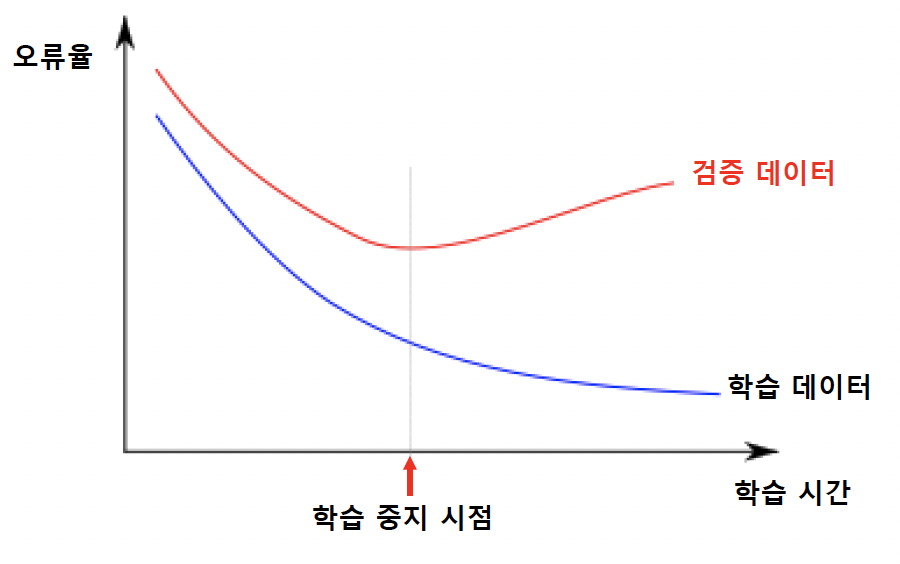

20221117
분류
과적합 (overfitting)
학습 데이터에 대해서 지나치게 잘 학습된 상태
데이터는 오류나 잡음을 포함할 개연성이 크기 때문에, 학습 데이터에 대해 매우 높은 성능을 보이더라도 학습되지 않은 데이터에 대해 좋지 않은 성능을 보일 수 있음
현대적인 overfitting problem 해결방법
structural capacity의 learning model 선택 → 최적화 기법을 사용한 learning model의 numerical capacity를 낮춤
과적합 회피 방법
학습 데이터에 대한 성능
- 학습을 진행할 수록 오류 개선 경향
- 지나치게 학습이 진행되면 과적합 발생
학습과정에서 별도의 검증 데이터 (validation data)에 대한 성능 평가
- 검증 데이터에 대한 오류가 감소하다가 증가하는 시점에 학습 중단

부적합 (underfitting)
학습 데이터를 충분히 학습하지 않은 상태

분류기의 성능평가
정확도 (accuracy)
얼마나 정확하게 분류하는가
정확도 = (옳게 분류한 데이터 개수) / (전체 데이터 개수)
테스트 데이터에 대한 정확도를 분류기의 정확도로 사용
정확도가 높은 분류기를 학습하기 위해서는 많은 학습 데이터를 사용하는 것이 유리
학습 데이터와 테스트 데이터는 겹치지 않도록 해야 함
데이터가 부족한 경우 성능평가
별도로 테스트 데이터를 확보하면 비효율적
가능하면 많은 데이터를 학습에 사용하면서, 성능 평가하는 방법 필요
K-겹 교차검증 (k-fold cross-validation) 사용
- 전체 데이터를 k등분
- 각 등분을 한 번씩 테스트 데이터로 사용하여, 성능평가를 하고 평균값 선택

불균형 데이터 (imbalanced data) 문제
특정 부류에 속하는 학습 데이터의 개수가 다른 부류에 비하여 지나치게 많은 경우
정확도에 의한 성능평가는 무의미할 수 있음
- ex) A 부류의 데이터가 전체의 99%인 경우, 분류기의 출력을 항상 A 부류로 하더라도 정확도는 99%가 됨
대응방안
- 가중치를 고려한 정확도 척도 사용
- 많은 학습데이터를 갖는 부류에서 재표본추출 (re-sampling)
- 적은 학습데이터를 갖는 부류에 대해서 인공적인 데이터 생성
SMOTE (Synthetic Minority Over-sampling Technique) 알고리즘
- 빈도가 낮은 부류의 학습 데이터를 인공적으로 만들어내는 방법
- 임의로 낮은 빈도 부류의 학습 데이터 x 선택
- x의 k-근접이웃 (k-nearest neighbor, KNN)인 같은 부류의 데이터 선택
- k-근접이웃 중에 무작위로 하나 y를 선택
- x와 y를 연결하는 직선 상의 무작위 위치에 새로운 데이터 생성

이진 분류기 (binary classifier)
두 개의 부류만을 갖는 데이터에 대한 분류기

이진 분류기의 성능평가
민감도 (sensitivity) / 재현율 (recall) / 진양성율 (true positive rate)
\[ sensitivity = \frac{TP}{TP + FN} \]
특이도 (specificity) / 진음성률 (true negative rate)
\[ specificity = \frac{TN}{FP + TN} \]
정밀도 (precision)
\[ precision = \frac{TP}{TP + FP} \]
음성 예측도
\[ \text{음성 예측도} = \frac{TN}{TN + FN} \]
위양성율 (false positive rate)
\[ \text{false positive rate} = \frac{FP}{FP + TN} = 1 - specificity \]
위발견율 (false discovery rate)
\[ \text{false discovery rate} = \frac{FP}{FP + TP} = 1 - precision \]
정확도 (accuracy)
\[ accuracy = \frac{TP + TN}{TP + TN + FP + FN} \]
F1 척도
\[ F1 = 2 \times \frac{precision \times recall}{precision + recall} \]
ROC 곡선 (receiver operating characteristic curve)
- 부류 판정 임계값에 따른 (위양성률, 민감도) 그래프
AUC (area under the curve)
- ROC 곡선에서 곡선 아래 부분의 면적
- 클 수록 바람직

지도학습
회귀 (regression)
학습 데이터에 부합되는 출력값이 실수인 함수를 찾는 문제
\[ f^*(x) = argmin_f \sum_{i = 1}^{n}{(y_i - f(x_i))^2} \]

성능
오차 - 예측값과 실제값의 차이
- 테스트 데이터들에 대한 \((예측값 - 실제값)^2\)의 평균 또는 평균의 제곱근
\[ E = \frac{1}{n}\sum_{i = 1}^{n}{(y_i - f(x_i))^2} \]
모델의 종류 (함수의 종류)에 영향을 받음

overfitting, underfitting
과적합 - 지나치게 복잡한 모델(함수) 사용
부적합 - 지나치게 단순한 모델(함수) 사용

모델의 복잡도 (model complexity)를 성능 평가에 반영
\[ 목적함수 = \text{오차의 합} + (가중치) \times (\text{모델 복잡도}) \]
모델 복잡도는 벌점(penalty) 항